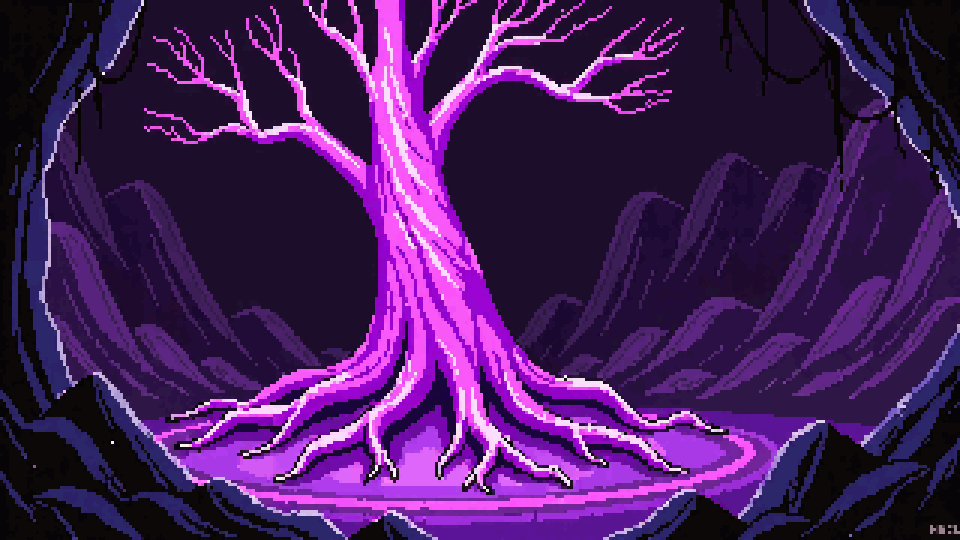

A Story About Regret, Grief, and Choosing to Build Forward
Sent to the frontier town of Thornhaven by the Crown, you discover a world ravaged by void corruption — the consequence of a grief-stricken King's desperate gamble with an ancient temporal artifact called the Grail of Life.
"A shopkeeper. The Crown sends a shopkeeper to fight corruption. How... economical."
— The Void Sovereign
— The Void Sovereign
As you push deeper through seven corrupted regions, the truth emerges: the King caused the rupture. A former royal tactician named Valdric, who lost his lover Lira in the disaster, now wages war as the Void Sovereign to seize the Grail and rewrite history itself.
The question at the heart of every timeline: Is erasure of suffering worth the erasure of everything built in response to it?
